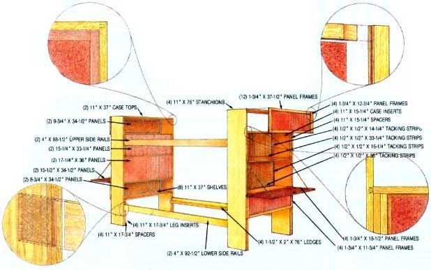
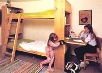

Is it possible to achieve food and energy independence on one acre? Well, with imagination, hard work, and the right one acre, we think it can be done... and that's what this project is all about. Of course, providing most of the basic needs for four people from such a small piece of ground is a tall order. Still, we think it's a goal worth pursuing, and we're hoping that in this series of articles about our low-cost homestead we'll be able to help some of you in your struggles to increase your self-reliance... by doing some of the experimenting for you.
In previous installments, we discussed our initial plans for the project, the construction of the building's shell, its waterproofing and insulation, some special energy-related "extras," and construction of the handmade kitchen cabinetry. This time, we'll again focus on the interior appointments by detailing a practical and inexpensive bunk bed set for the children's bedroom.
A truly rewarding game to play when planning an affordable homestead is cost avoidance... and when it comes to furniture, shucking the store-bought suites in favor of simple and functional owner-made substitutes can net a handsome return. This is especially true if you're able to purchase rough-cut air-dried lumber or, better yet, are in a position to harvest your own. Even if you have to buy your wood at a mill or a lumberyard, though, you'll be able to realize a healthy saving and still enjoy a quality piece of work with only a moderate amount of expended effort... if you respect a "simplicity in design" rule of thumb.
The bunk beds on these pages-created by Eco-Village staff member James McGinnis and former staffer Dean Davis-represent a successful marriage of elementary construction techniques and attention to craftsmanship. Though you won't be able to duplicate the achievement with just a handsaw and a block plane, it shouldn't take more than an enthusiast's moderately well-equipped shop (which would include a table saw with combination and dado blades, a router and a router table, a belt sander, a circular saw, a drill with common-size wood-boring bits, and the ubiquitous assortment of clamps, hammers, chisels, sanding blocks, and measuring tools) to make great inroads toward that end.
What's more, you needn't be intimidated by the fact that we used good, home-milled oak... for even if you choose to use a clear grade of store-bought pine, the project will be fairly simple to piece together (using our illustrations as a guide), because we've purposely sized the parts to be consistent with dimensional lumber. In fact, just about every piece of wood in the project is 3/4" thick, which makes measuring and fitting relatively uncomplicated.
A close look at the unit reveals its multipurpose, space-saving nature. In addition to providing two 34" X 76" sleeping areas, it also furnishes a pair of bookcases at the upper bunk, another pair at the lower bunk, and a set of bulletin boards between. And that's not all: At one end (or at both ends, if the room is large enough) an 18-1/2" X 37-1/2" bookcase door folds down to become a convenient study desk.
James McGinnis (who did most of the actual assembly) started by building the corner uprights. To gain these 11"-wide stanchions, he merely butt-glued pairs of 5-1/2" X 76" boards together. The bunks' side rails are sandwiched between those uprights and oak inserts set both at the ends of the bookshelves and at the bottom legs. The rails rest on block spacers glued between the boards, these supports being notched to accept the ends of those long horizontal planks. Two 1-1/2" X 2" X 76" ledges fastened to the inside lower edges of each pair of rails with glue and No. 10 X 2-1/2" wood screws support 3/4" X 34-1/2" X 76-1/2" plywood mattress foundations. (To make it easier to assemble the unit, the upper side rails are 4" shorter than the 92-1/2" lower spans.)
James chose to use dovetail joints to keep the junctions of the shelves and uprights uncomplicated but structurally sound. The uppermost and lowest shelf joints are blind to the bed face, while the two center shelf connections are blind to the desk. Actually, making the dovetails isn't as complicated as it may sound, since the router table-fitted with the proper cutter and a fence-forms the tenon pan, while the mortises are similarly cut with a hand router and a dado blade.
Straight mortise and tenon joints can be used with equal success where strength isn't a major consideration. As examples, the top of each bookcase utilizes such a joint in a blind configuration, whereas the face-molding corner ones, including those of the cover panels and the fold-down desk frame, feature an open design.
The cover panels, by the way, typify our straightforward approach. The inside edges of the 3/4" X 1-3/4" frames are merely grooved with a dado blade, and inexpensive 1/4" lauan plywood inserts fit into the slots. Rather than cover the exposed sheets with fine wood, we simply used wallpaper paste to secure natural burlap to the faces. The panels are nailed to the bookshelf, and the countersunk heads are hidden with filler. To allow the desk surface to open, concealed cabinet hinges join the frame's lower rail to the top of the panel beneath it, and two chains hold it at the proper level. A magnetic latch keeps the top shut when it's not in use.
The bulletin boards are set within the shelf frames and are also faced with burlap. Though we held costs down by limiting ourselves to lauan inserts, a corkboard pad would provide more cushion and cost only a few additional dollars. To help support the boards, we glued 1/2" X 1/2" stops to the rear of the required shelves to provide a tacking strip.
Though the gymnastic antics of your own children may convince you that a boarding ladder is unneccesary, we made one of 3/4" X 4" X 64" rails joined to five 3/4" X 3" X 16-1/2" steps with pairs of 3/8" X 1-1/2" dowels. (A doweling jig wasn't needed, since we just clamped the parts together before drilling and gluing them.) To hold the stair; in place, we screwed a 1/4" X 3" X 18" catch board to the rear of the rails at the top, and cut 3/4"-deep, 3-3/4"-long notches into the back of those planks, as well. In the interest of safety, you may also want to install a wooden stop rail between the uprights at the top bunk.
The ladder, like all the other wooden components of the bed, was fine-sanded and rubbed with pure lung oil to dress and harden the oak's surface. That final touch-along with the addition of two foam mattresses, of course-makes this bed inviting, and probably more functional than any other around. But don't think we'll be spending all our time napping: By next issue, we should be ready to reveal the details of our combination chicken coop/greenhouse project. This rather unorthodox bird-and vegetable-raiser should complement our little homestead nicely.
You won't want to miss it!
|
 STAFF PHOTO |
 |
|